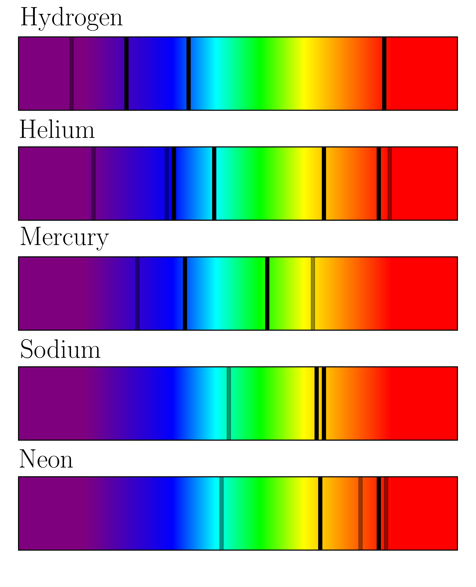

Absorption Spectra
Welcome to the absorption spectra! This experiment is to look at absorption lines within a gas!
Reference Spectra

Click anywhere outside this box to exit
Energy: eV
Use this slider to set the photon energy
Results:
Observed: X out of Y